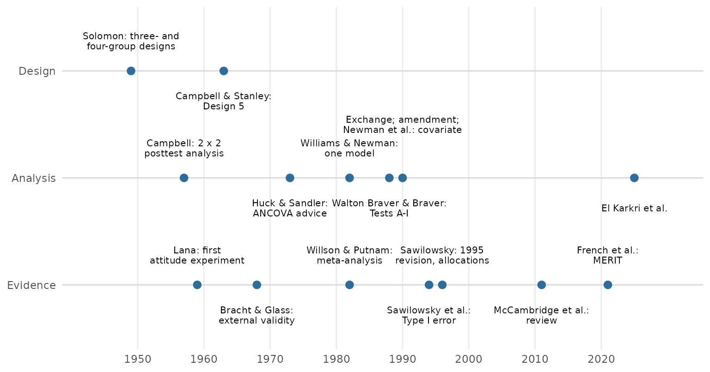
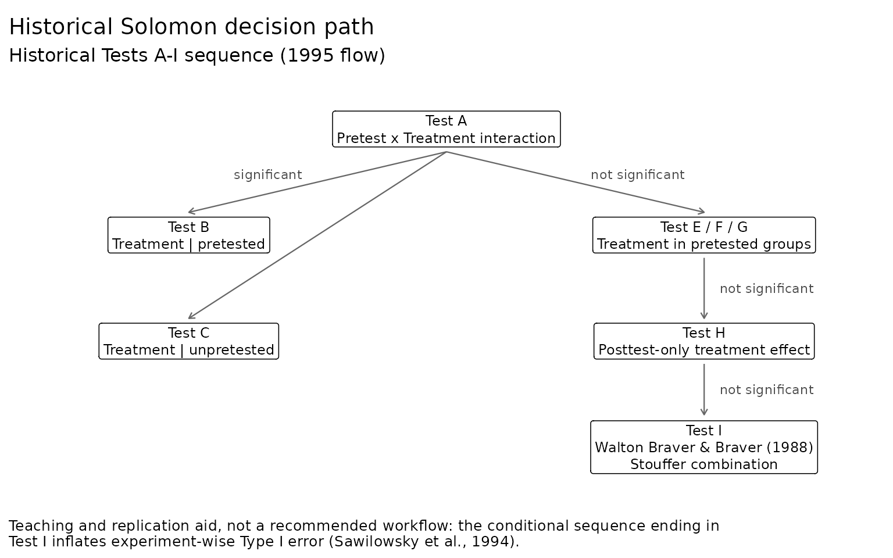

Solomon studies published over seven decades used different analyses, and several of those analyses were later criticized. Reading an older study, or replicating one, requires knowing which procedure it followed and what was later learned about it. This article traces that history from the primary sources. solomonR labels each historical procedure by its author and year, reproduces it, and keeps it separate from the analyses it recommends today.

The design (1949)
Solomon (1949) wrote for researchers studying transfer of training, attitude change, and the effect of experience on existing skills (p. 137). His concern was that a pretest does more than measure. It can interact with the training, changing how participants attend to it or receive it (p. 141).
He first proposed a three-group design: an experimental group and a control group, both pretested, plus a second control group that received the training without a pretest (p. 141). Since that group had no pretest, he inferred its pretest mean from the pooled pretested groups and computed an interaction term from the groups’ improvement scores (pp. 141–143).
- The demonstration. It used spelling lessons in two classes. The groups were “roughly equated” by teachers’ judgments rather than randomized (p. 144).
- The result. The pretest reduced the effect of the lesson, so the usual two-group design would have underrated it (p. 145).
fit_solomon_1949() computes Solomon’s analysis, and
solomon1949 holds his published means. For the fifth grade
(Table II, p. 144), the inferred pretest is 3.0, and the interaction is
I = d1 − (d2 + d3) = −2.2:
g5 <- solomon1949[solomon1949$grade == 5, ]
fit_solomon_1949(post_mean = g5$mean, pre_mean = g5$pre_mean[1:2], n = g5$n)
#> Solomon (1949) improvement-score analysis (historical)
#> ------------------------------------------------------
#> Design: three-group (Solomon, 1949, Table I, p. 142)
#>
#> Group n Pretest Training Pre mean Post mean Improvement
#> Experimental 10 yes yes 3.20 9.90 6.70
#> Control I 10 yes no 2.80 3.50 0.70
#> Control II 10 no yes 3.00 (inferred) 11.20 8.20
#>
#> Inferred pretest i = 3.00 (average of the pretested groups' means)
#> Interaction I = d1 - (d2 + d3) = -2.20
#>
#> Solomon gave no standard error or test for I. Campbell and Stanley
#> (1963/1966, p. 25) judged his gain-score suggestions unacceptable; see
#> fit_solomon_classic() for the tests that followed and fit_solomon_glm()
#> for the recommended analysis.The sixth grade gives I = −3.1 (Table III, p. 145). Solomon reported no standard error for I: he printed the error of Control Group II’s improvement as “?” and judged the interaction from the variability of the observed means (p. 144).
The fourth group, which received neither pretest nor training, came from field studies. There, events between pretest and posttest affect everyone, and a group with no pretest and no treatment shows their effect. In a footnote, Solomon credits Stouffer with pointing out that this group was necessary (p. 146). That group’s change was attributed to the outside event (p. 147), and Solomon added that time and maturation can change scores in the same way (p. 148).
With the fourth group, the interaction becomes I = d1 − (d2 + d3 −
d4) (Table V, p. 147). Both unpretested groups get the same inferred
pretest, so it cancels. What remains is the two-by-two interaction
contrast of the posttests, less the pretest difference between the two
pretested groups (?fit_solomon_1949).
The analysis recast (1957)
Campbell (1957) brought the design into the discussion of validity. He described the interaction of testing and treatment as a sensitization of participants to the treatment, which leaves a pretest-posttest experiment no basis for generalizing to people who were never pretested (p. 302). The Solomon design, which controls and measures that interaction, had become in his words “the new ideal design for social scientists” (p. 303).
He also set the terms of the analysis that later texts repeated (p. 303):
- Against the inferred pretest. Giving the unpretested groups the pretested groups’ mean pretest “restricts the effective degrees of freedom, violates assumptions of independence,” and leaves no legitimate test of the effects.
- For the posttests. The four posttests form a two-by-two analysis of variance: pretesting, treatment, and their interaction.
- For history and maturation. A t test of the unpretested control posttest against the pretests.
The first experiments (1959–1961)
The first studies built on the design asked whether pretesting mattered at all.
Lana (1959) gave a recorded talk on vivisection to
introductory psychology classes, in a four-group design with a pretest
12 days before the talk. The talk changed attitudes, but the pretest
neither changed them nor interacted with the talk (pp. 297–298). His
analysis of variance of the posttest means can be reproduced from the
published cell statistics, bundled as lana1959:
with(lana1959, solomon_from_summary(n, mean, sd))
#> Solomon analysis from summary statistics
#> ----------------------------------------
#> Pooled error variance: 39.077 on 152 df (equal variances assumed)
#>
#> Two-way ANOVA on the posttest (Type III sums of squares)
#> Treatment SS = 209.291 df = 1 F = 5.36 p = 0.022
#> Pretest SS = 1.673 df = 1 F = 0.04 p = 0.836
#> Treatment x Pretest SS = 2.736 df = 1 F = 0.07 p = 0.792
#> Error SS = 5939.644 df = 152
#>
#> Contrasts with 95% confidence intervals
#> Test A: Pretest x Treatment 0.550 [-3.556, 4.656], t(152) = 0.26, p = 0.792
#> Test B: Treatment | pretested 2.680 [-0.581, 5.941], t(152) = 1.62, p = 0.106
#> Test C: Treatment | unpretested 2.130 [-0.366, 4.626], t(152) = 1.69, p = 0.094
#> Test D: ATE (avg over pretest) 2.405 [0.352, 4.458], t(152) = 2.31, p = 0.022
#> Pretest main effect -0.215 [-2.268, 1.838], t(152) = -0.21, p = 0.836The treatment F is 5.36, against the published 5.35 (Table 3, p. 297). Lana’s sums of squares are on the scale of the cell means; divided by the harmonic mean of the cell sizes, the package’s sums of squares match them.
Entwisle (1961) paired fourth-graders on sex and IQ and pretested one member of each pair at random. There was no overall pretest effect, but the pretest helped some combinations of sex and ability and hindered others (pp. 612–613). She suggested that Solomon’s result was such an effect, observed in a homogeneous group (p. 614), and that pretest effects may fade as the interval grows (p. 610).
The design in the canon (1963)
Campbell and Stanley’s survey, reprinted as a book in 1966, made the four-group design Design 5 of its three true experimental designs. They wrote that it “deservedly has higher prestige” and was the first design to consider external validity explicitly (Campbell & Stanley, 1963/1966, p. 24). Page numbers here refer to the 1966 book.
-
What the design adds (p. 25):
- it determines both the main effect of testing and the interaction of testing with the treatment;
- it replicates the treatment effect in four comparisons;
- comparing the unpretested control posttest with the pretests estimates the combined effect of maturation and history.
-
The analysis problem (p. 25):
- no single statistical procedure uses all six sets of observations at once, a gap that Williams and Newman (1982) set out to fill (see below);
- the design’s asymmetry rules out an analysis of variance of gain scores, and they judged Solomon’s gain-score suggestions unacceptable.
-
Their recommended analysis (p. 25):
- a two-by-two analysis of variance of the posttest scores, as Campbell (1957, p. 303) had proposed;
- then, if the effects of pretesting are negligible, an analysis of covariance of the pretested groups with the pretest as covariate.
They also noted that the last two groups of Design 5 form Design 6, the posttest-only control group design. Design 6 relies on randomization rather than a pretest for the equivalence of its groups (p. 25). For many purposes they thought the extra gains of Design 5 might not be worth more than double the effort (p. 26).
Huck and Sandler (1973) refined this advice:
- ANCOVA with a pretesting main effect. The analysis of covariance of the pretested groups remains valid even when pretesting has a main effect, because random assignment makes that effect the same in both groups (pp. 54–55).
- When the interaction is significant. The t test on the unpretested groups still answers whether the treatment works (p. 55).
fit_solomon_classic() computes these tests as Tests A–H.
Its history component compares the unpretested control
posttest with the pretests, as Campbell and Stanley describe.
Three works of 1968 and 1969 carried the design further:
- Bracht and Glass (1968) listed pretest sensitization, posttest sensitization, and the timing of measurement among the threats to external validity (p. 439). Reviewing the evidence, they found the pretest effect most likely when the outcome is a self-report of personality, attitude, or opinion, and the evidence for achievement inconclusive (p. 463). They also questioned Solomon’s spelling result: the pretested groups were sent out of the room, and the groups were matched only by teachers’ judgments (p. 462).
- Lana (1969/2009) reached a different conclusion from much of the same evidence. Pretests that involve learning or recall did sensitize, raising or lowering the treatment’s effect (pp. 101–103). But he found an “overwhelming lack” of sensitization when the pretest measures existing attitudes or opinions (pp. 103–104). The two reviews disagree about the outcomes most at risk, which is one reason the question remained open.
- Solomon and Lessac (1968) applied the design to studies of development, where a pretest could itself enrich an isolated animal’s experience. Solomon now presented the design as a two-by-two factorial, with the interaction as a difference of differences, and still used the pretested groups’ combined mean as the best estimate of the unpretested groups’ starting point (pp. 146–147).
Lessac and Solomon (1969) reported in full the beagle experiment that Solomon and Lessac (1968, p. 149) had summarized. One beagle from each of six litters was placed in each group: two groups were isolated for a year from 12 weeks of age, and one isolated and one control group were pretested (pp. 15–16). They analyzed the posttests by analyses of variance of isolation and pretesting, and compared posttests with the pretests of the pretested groups, usually combined, by Mann–Whitney U tests (pp. 18–22). The adult controls matched the puppies’ pretests on all but one test, so the isolates’ deficits were read as a loss of abilities they had already shown, not a failure to develop (p. 23). The pretest also interacted with the isolation. It protected the isolates’ avoidance learning (pp. 21–23) but deepened their impairment when the runway’s start box was rotated (pp. 19, 24). Without the four-group design, they wrote, they could have shown neither the loss of existing abilities nor the varied effects of the pretest (p. 24).
How often does pretesting matter? (1982)
Willson and Putnam (1982) pooled 32 studies in a meta-analysis of pretest effects. Among randomized studies, pretesting raised posttest scores by an average of about a fifth of a standard deviation. There was little evidence of a pretest-by-treatment interaction.
The article “Planning a Solomon Study” uses their estimates as planning values. They also frame a question that recurs below: how much should a researcher pay to detect an effect that is often small?
One model for all six observations (1982)
Williams and Newman (1982) took up Campbell and Stanley’s analysis problem directly. They quoted the statement that no single procedure uses all six sets of observations (p. 77) and replied that, with linear models, “a single statistical procedure can be employed” that uses them all at once (p. 78). They credited the idea to a 1980 conference paper by Newman, Benz, and Williams (pp. 78, 90).
- Six groups of scores. The pretests and posttests of the pretested groups and the posttests of the unpretested groups were treated as six groups, each with an indicator in one regression (pp. 83–84). Each hypothesis was a restriction on the coefficients, with the design read as a one-way layout of six groups or as a three-way layout of treatment, pretesting, and pretest versus posttest with two empty cells (pp. 83–89; Table 4, p. 89).
- No person vectors. Person vectors had to be excluded (p. 83), so each participant’s pretest and posttest enter as independent scores. In solomonR’s reading of their numbers, this costs precision: the same treatment-by-occasion contrast, with a sum of squares of 20, gives F = 9.41 against the within-person error of their repeated-measures analysis (Table 3, p. 83) but F = 4.29 against the error of the six-group model (Table 4, p. 89).
- The authors’ caution. The single analysis might prove no more satisfactory than the usual analyses that split the data in two (p. 78).
A single test for the whole design (1988)
Walton Braver and Braver (1988) answered Campbell and Stanley’s analysis problem differently, with meta-analysis:
- Test I. Treat the pretested and unpretested comparisons as two studies of the same effect, and combine their one-tailed p-values with Stouffer’s method. Because it uses all the data, they called Test I “the most powerful single test” of the treatment effect (p. 153).
-
The sequence. A flowchart embedded Test I in Tests
A–I. In the sequence as they drew it:
- a significant Test A (the interaction) leads to the simple effects, Tests B and C;
- otherwise testing moves through Test D (the main effect), then a pretested-groups test (E, F, or G), then Test H (the unpretested groups), stopping at the first significant test;
- Test I is reached only when all of these are nonsignificant (pp. 151–153).
- Error rates. Because the experiment-wise error rate of a sequence of tests is hard to specify in advance, they suggested treating the significance level at each step as conditional on reaching that step and on the null hypothesis being true there (p. 153, footnote 3).
Their worked example reports Test I as z = 2.05, p = .040 (p. 153). That p is two-tailed.
The exchange (1990)
The procedure drew an immediate exchange in Perceptual and Motor Skills.
- Sawilowsky and Markman (1990a). They constructed an example in which Test I missed an effect that the standard analyses detected, as Braver and Walton Braver (1990, p. 321) summarize it.
-
Braver and Walton Braver (1990).
- They replied that the example did not meet the condition under which they recommended Test I: a nonsignificant Test A, meaning the treatment effects in the pretested and unpretested groups are homogeneous (pp. 321–322).
- They agreed, however, that using meta-analysis selectively, as their flowchart did, introduced selection bias.
- They therefore amended the flowchart: once Tests A and D are nonsignificant, the analyst should complete all tests through Test I, which they regarded as the most definitive because only it uses all the data (p. 322).
-
Sawilowsky and Markman’s (1990b) rejoinder.
- They set out four possible outcomes: a treatment effect with or without pretest sensitization, and no effect with or without it.
- When no sensitization is expected, they argued, the Solomon design has no advantage over a two-group design (p. 424).
- They called for a systematic study of the method’s properties before its use (p. 425).
The pretest as a covariate for all four groups (1990)
Newman et al. (1990) returned to the single model with the pretest as a covariate. Solomon (1949, p. 146) had suggested that an adapted analysis of covariance might improve the analysis, and Newman et al. quoted him (p. 92). Their model, which they call a pseudo-analysis of covariance (pp. 94, 98), fits the posttests of the four groups in one regression, with an indicator for each group and the pretest as a covariate where it was given, coded 0 elsewhere (Table 1, p. 95; equation 7, p. 98).
- What the coding does. Each group keeps its own mean, so the slope comes from the pretested groups alone, and the unpretested groups’ means are not adjusted (p. 98).
- The caution. They warned against adjustments that mechanically treat unpretested participants as having a pretest score of zero (p. 98), and took the pretested groups’ adjusted means at their pooled pretest mean (p. 101).
- The tests. Treatment, pretesting, and the interaction were tested as restrictions on the group coefficients, against the pooled error of all four groups (pp. 98–100; Table 3, p. 100).
A single model for the whole design thus dates from Williams and
Newman (1982), and the form with the pretest as a covariate, which
fit_solomon_glm() fits, from Newman et al. (1990). With
conventional standard errors, the package reproduces their example
(Table 1, p. 95):
nbw <- data.frame(
treat = rep(c(1, 0, 1, 0), each = 5),
pretested = rep(c(1, 1, 0, 0), each = 5),
pre = c(5, 7, 5, 12, 6, 5, 4, 4, 6, 6, rep(NA, 10)),
post = c(15, 12, 10, 17, 11, 8, 7, 8, 6, 6, 11, 8, 10, 9, 12, 9, 8, 6, 3, 4)
)
fit <- fit_solomon_glm(post, treat, pretested, pre, data = nbw, robust = "none")
fit$effects[, c("contrast", "estimate", "statistic", "df")]
#> contrast estimate statistic df
#> 1 ATE (avg over pretest) 4.4473684 4.5837121 15
#> 2 Pretest x Treatment 0.8947368 0.4610835 15
#> 3 Treatment | pretested 4.8947368 3.3763090 15
#> 4 Treatment | unpretested 4.0000000 3.1009991 15
#> 5 Pretest effect | control 1.5526316 1.1158164 15
#> 6 Pretest effect | treated 2.4473684 1.7588293 15
#> 7 Pretest main effect 2.0000000 2.0052096 15
fit$coefficients[fit$coefficients$term == "pre_obs", c("term", "estimate")]
#> # A tibble: 1 × 2
#> term estimate
#> <chr> <dbl>
#> 1 pre_obs 0.553The pretest slope is 0.553, against the published .55264 (p. 98). Squared, the t statistics of the average treatment effect and of the Pretest x Treatment contrast give their F tests of the treatment and the interaction: 21.01 and 0.21, against the printed 21.01 and .22 (Table 3, p. 100). solomonR adds the four contrasts as named estimates with intervals, robust standard errors for the heteroskedasticity that the pretest adjustment creates, and the extensions described in the methods guide.
The Monte Carlo evidence (1994, 1996)
Sawilowsky et al. (1994) supplied that study. They objected that treating each step’s significance level as conditional was “untenable” (p. 366), since the experiment-wise error rate can be estimated directly. With 30 participants per group and normal data, the 1988 sequence falsely declared an effect about 14% of the time, nearly three times the nominal 5% (p. 368, Table 2). When the tests were not run conditionally, the classical tests were more powerful than Test I in most of the treatment models studied (pp. 369–371).
Sawilowsky (1996) extended the evidence:
- The 1995 revision. He reported that Walton Braver and Braver (1995, as cited in Sawilowsky, 1996, p. 2) had revised the procedure to remove Test D; that revision was never published.
- Error rates. For most of the ten distributions he studied, the error rate was about .12–.14 with or without Test D (Table 1). It stayed near .12 across pretest–posttest correlations from 0 to .95 and group sizes from 3 to 30 (Table 3).
- Two remedies. He proposed two Bonferroni-type allocations of alpha across Tests A, E, H, and I (Table 4).
- A preferred alternative. Where theory and evidence suggest no sensitization, he preferred a two-group randomized design analyzed at the full alpha to the Solomon sequence at the reduced alpha its control requires (p. 5).
solomonR’s replication of these published rates, including both readings of Test I’s criterion, is reported in “Historical Tests: Replicating the Published Error Rates”.
More than one treatment (2002–2020)
Other work extended the design to compare several treatments:
- McCarthy and Tucker (2002). An eight-group study crossed two treatments with pretesting. It was analyzed as three two-by-two analyses of variance, one for each treatment and one for their combination, each against the control groups (pp. 637–640).
- Steyn (2005, 2009). Steyn ran an eight-group study of three treatments (Steyn, 2005, pp. 103–105). He then set out the design for k treatments, with 2(k + 1) groups, and a sequence of tests of internal validity and of the treatments’ effects (Steyn, 2009). He noted that the sequence’s several analyses of variance capitalize on chance. Steyn (2009) also describes repeating the posttest, to see whether effects last.
- Mai et al. (2020). A randomized six-group study, analyzed as three overlapping four-group designs, with published individual data.
In each study, one design was analyzed as several four-group designs
that share groups. fit_solomon_glm(control = ) fits one
model to all the groups instead, and fit_solomon_steyn()
reproduces Steyn’s sequence; see “Designs With Several Treatments”.
Steyn’s (2005, pp. 151–152) group statistics are bundled as
steyn2005:
with(steyn2005, solomon_from_summary(n, mean, sd, treat = condition,
pretested = pretested, control = "Control"))
#> Solomon analysis from summary statistics, N-group design
#> --------------------------------------------------------
#> Conditions: Norms, Marking, Test; control: Control. With and without a pretest: 8 groups.
#> Pooled error variance: 163.370 on 1715 df (equal variances assumed)
#>
#> Two-way ANOVA on the posttest (Type III sums of squares)
#> Condition SS = 3937.177 df = 3 F = 8.03 p < .001
#> Pretest SS = 739.550 df = 1 F = 4.53 p = 0.034
#> Pretest x Condition SS = 489.696 df = 3 F = 1.00 p = 0.392
#> Error SS = 280179.215 df = 1715
#>
#> Contrasts with 95% confidence intervals
#> Comparison Contrast Est (SE) t df p p adj. 95% CI
#> Norms vs Control ATE (avg over pretest) -3.251 (0.872) -3.73 1715 <.001 <.001 [-4.961, -1.540]
#> Marking vs Control ATE (avg over pretest) -2.644 (0.876) -3.02 1715 0.003 0.003 [-4.362, -0.926]
#> Test vs Control ATE (avg over pretest) -4.023 (0.869) -4.63 1715 <.001 <.001 [-5.727, -2.318]
#> Norms vs Control Pretest x Treatment 0.457 (1.745) 0.26 1715 0.793 1.000 [-2.965, 3.879]
#> Marking vs Control Pretest x Treatment -0.154 (1.752) -0.09 1715 0.930 1.000 [-3.590, 3.282]
#> Test vs Control Pretest x Treatment 2.495 (1.738) 1.44 1715 0.151 0.454 [-0.913, 5.903]
#> Norms vs Control Treatment | pretested -3.022 (1.224) -2.47 1715 0.014 0.041 [-5.423, -0.621]
#> Marking vs Control Treatment | pretested -2.721 (1.230) -2.21 1715 0.027 0.047 [-5.133, -0.309]
#> Test vs Control Treatment | pretested -2.775 (1.223) -2.27 1715 0.023 0.047 [-5.173, -0.377]
#> Norms vs Control Treatment | unpretested -3.479 (1.243) -2.80 1715 0.005 0.010 [-5.917, -1.041]
#> Marking vs Control Treatment | unpretested -2.567 (1.247) -2.06 1715 0.040 0.040 [-5.014, -0.120]
#> Test vs Control Treatment | unpretested -5.270 (1.235) -4.27 1715 <.001 <.001 [-7.692, -2.848]
#>
#> p adj.: adjusted by Holm's (1979) procedure within each contrast, across the 3 comparisons.
#> Confidence intervals are not adjusted.solomonR follows a pre-publication draft of Steyn’s (2009) article, which the author provided (R. Steyn, personal communication, September 30, 2026). The published article was not available for comparison.
After the debate (2011–2025)
Later work turned from the test sequence to the design’s purpose:
- McCambridge et al. (2011). They reviewed Solomon studies of behavior change and found sparse, inconsistent evidence of pretest effects.
- French et al. (2021a, 2021b). The MERIT recommendations treat measurement reactivity as a source of bias in trials. They place the Solomon design among several ways to detect or avoid it.
- El Karkri et al. (2025a). A classroom Solomon study that reports full cell statistics and a sensitization effect.
- El Karkri et al. (2025b). They set out an analysis path for categorical outcomes.
What solomonR implements
| Procedure | Source | In solomonR | Status |
|---|---|---|---|
| Improvement scores and the interaction term I | Solomon (1949) |
fit_solomon_1949(), data solomon1949
|
historical |
| Tests A–H | Campbell (1957); Campbell & Stanley (1963/1966); Huck & Sandler (1973) | fit_solomon_classic() |
historical |
| History/maturation check | Solomon (1949); Campbell (1957); Campbell & Stanley (1963/1966) | fit_solomon_classic()$history |
historical |
| Lana’s analysis of variance of posttest means | Lana (1959) |
solomon_from_summary(), data lana1959
|
historical |
| Test I and the 1988 sequence | Walton Braver & Braver (1988) | fit_solomon_classic(flow = "1988") |
historical |
| 1990 amendment | Braver & Walton Braver (1990) | fit_solomon_classic(flow = "1990") |
historical |
| 1995 revision without Test D | Walton Braver & Braver (1995, as cited in Sawilowsky, 1996) | fit_solomon_classic(flow = "1995") |
historical |
| Alpha allocations | Sawilowsky (1996) | fit_solomon_classic(alpha_allocation = ...) |
historical |
| Categorical rule | El Karkri et al. (2025b) | fisher_solomon() |
historical |
| Sequence of tests for designs with one or several treatments | Steyn (2009); post hoc tests as in Steyn (2005) |
fit_solomon_steyn(), data steyn2005
|
historical |
| One model for all the groups, with the pretest as a covariate where it was given; robust standard errors; for several treatments, omnibus tests and Holm-adjusted comparisons | Newman et al. (1990); the inference and the extension to several treatments from contemporary practice (see the methods guide) | fit_solomon_glm() |
recommended |
plot_classic_flow() draws each version of the
sequence:
plot_classic_flow(flow = "1995")
All works cited in solomonR are listed, with notes on how the package uses them, on the References page.
References
Bracht, G. H., & Glass, G. V. (1968). The external validity of experiments. American Educational Research Journal, 5(4), 437–474. https://doi.org/10.3102/00028312005004437
Braver, S. L., & Walton Braver, M. C. (1990). Meta-analysis for Solomon four-group designs reconsidered: A reply to Sawilowsky and Markman. Perceptual and Motor Skills, 71(1), 321–322. https://doi.org/10.2466/pms.1990.71.1.321
Campbell, D. T. (1957). Factors relevant to the validity of experiments in social settings. Psychological Bulletin, 54(4), 297–312. https://doi.org/10.1037/h0040950
Campbell, D. T., & Stanley, J. C. (1966). Experimental and quasi-experimental designs for research. Rand McNally. (Original work published 1963)
El Karkri, M., Quesada, A., & Romero-Ariza, M. (2025a). The dual impact of pretest sensitisation and the cognitive acceleration through science education programme in the Solomon four-group design. Brain Sciences, 16(1), Article 64. https://doi.org/10.3390/brainsci16010064
El Karkri, M., Quesada, A., & Romero-Ariza, M. (2025b). Methodological aspects of the Solomon four-group design: Detecting pre-test sensitisation and analysing qualitative and quantitative variables in education research. Review of Education, 13(1), Article e70050. https://doi.org/10.1002/rev3.70050
Entwisle, D. R. (1961). Interactive effects of pretesting. Educational and Psychological Measurement, 21(3), 607–620. https://doi.org/10.1177/001316446102100307
French, D. P., Miles, L. M., Elbourne, D., Farmer, A., Gulliford, M., Locock, L., Sutton, S., McCambridge, J., & MERIT Collaborative Group. (2021a). Reducing bias in trials due to reactions to measurement: Experts produced recommendations informed by evidence. Journal of Clinical Epidemiology, 139, 130–139. https://doi.org/10.1016/j.jclinepi.2021.06.028
French, D. P., Miles, L. M., Elbourne, D., Farmer, A., Gulliford, M., Locock, L., Sutton, S., McCambridge, J., & MERIT Collaborative Group. (2021b). Reducing bias in trials from reactions to measurement: The MERIT study including developmental work and expert workshop. Health Technology Assessment, 25(55), 1–72. https://doi.org/10.3310/hta25550
Huck, S. W., & Sandler, H. M. (1973). A note on the Solomon 4-group design: Appropriate statistical analyses. The Journal of Experimental Education, 42(2), 54–55. https://doi.org/10.1080/00220973.1973.11011460
Lana, R. E. (1959). Pretest-treatment interaction effects in attitudinal studies. Psychological Bulletin, 56(4), 293–300. https://doi.org/10.1037/h0044646
Lana, R. E. (2009). Pretest sensitization. In R. Rosenthal & R. L. Rosnow, Artifacts in behavioral research: Robert Rosenthal and Ralph L. Rosnow’s classic books (pp. 93–109). Oxford University Press. https://doi.org/10.1093/acprof:oso/9780195385540.003.0004 (Original work published 1969)
Lessac, M. S., & Solomon, R. L. (1969). Effects of early isolation on the later adaptive behavior of beagles: A methodological demonstration. Developmental Psychology, 1(1), 14–25. https://doi.org/10.1037/h0026778
Mai, N. N., Takahashi, Y., & Oo, M. M. (2020). Testing the effectiveness of transfer interventions using Solomon four-group designs. Education Sciences, 10(4), Article 92. https://doi.org/10.3390/educsci10040092
McCambridge, J., Butor-Bhavsar, K., Witton, J., & Elbourne, D. (2011). Can research assessments themselves cause bias in behaviour change trials? A systematic review of evidence from Solomon 4-group studies. PLoS ONE, 6(10), Article e25223. https://doi.org/10.1371/journal.pone.0025223
McCarthy, A. M., & Tucker, M. L. (2002). Encouraging community service through service learning. Journal of Management Education, 26(6), 629–647. https://doi.org/10.1177/1052562902238322
Newman, I., Benz, C., & Williams, J. D. (1990). Alternatives in analyzing the Solomon four group design. Multiple Linear Regression Viewpoints, 17(2), 91–103. https://ojs.lib.ua.edu/glmj/article/view/125
Sawilowsky, S. S. (1996, June 23). Controlling experiment-wise Type I error of meta-analysis in the Solomon four-group design [Paper presentation]. First International Conference on Multiple Comparisons, Tel Aviv, Israel. https://digitalcommons.wayne.edu/coe_tbf/29/
Sawilowsky, S. S., Kelley, D. L., Blair, R. C., & Markman, B. S. (1994). Meta-analysis and the Solomon four-group design. The Journal of Experimental Education, 62(4), 361–376. https://doi.org/10.1080/00220973.1994.9944140
Sawilowsky, S. S., & Markman, B. S. (1990a). Another look at the power of meta-analysis in the Solomon four-group design. Perceptual and Motor Skills, 71(1), 177–178. https://doi.org/10.2466/pms.1990.71.1.177
Sawilowsky, S. S., & Markman, B. S. (1990b). Rejoinder to Braver and Walton Braver. Perceptual and Motor Skills, 71(2), 424–426. https://doi.org/10.2466/pms.1990.71.2.424
Solomon, R. L. (1949). An extension of control group design. Psychological Bulletin, 46(2), 137–150. https://doi.org/10.1037/h0062958
Solomon, R. L., & Lessac, M. S. (1968). A control group design for experimental studies of developmental processes. Psychological Bulletin, 70(3, Pt. 1), 145–150. https://doi.org/10.1037/h0026147
Steyn, R. (2005). Self-evaluasie en die vorming van selfdoeltreffendheidspersepsies [Self-evaluation and the forming of self-efficacy perceptions] [Doctoral thesis, University of South Africa]. Unisa Institutional Repository. https://hdl.handle.net/10500/1745
Steyn, R. (2009). Re-designing the Solomon four-group: Can we improve on this exemplary model? Design Principles and Practices: An International Journal—Annual Review, 3(1), 383–394. https://doi.org/10.18848/1833-1874/CGP/v03i01/37588
Walton Braver, M. C., & Braver, S. L. (1988). Statistical treatment of the Solomon four-group design: A meta-analytic approach. Psychological Bulletin, 104(1), 150–154. https://doi.org/10.1037/0033-2909.104.1.150
Williams, J. D., & Newman, I. (1982). Using linear models to simultaneously analyze a Solomon four group design. Multiple Linear Regression Viewpoints, 11(3), 77–90. https://ojs.lib.ua.edu/glmj/article/view/68
Willson, V. L., & Putnam, R. R. (1982). A meta-analysis of pretest sensitization effects in experimental design. American Educational Research Journal, 19(2), 249–258. https://doi.org/10.3102/00028312019002249